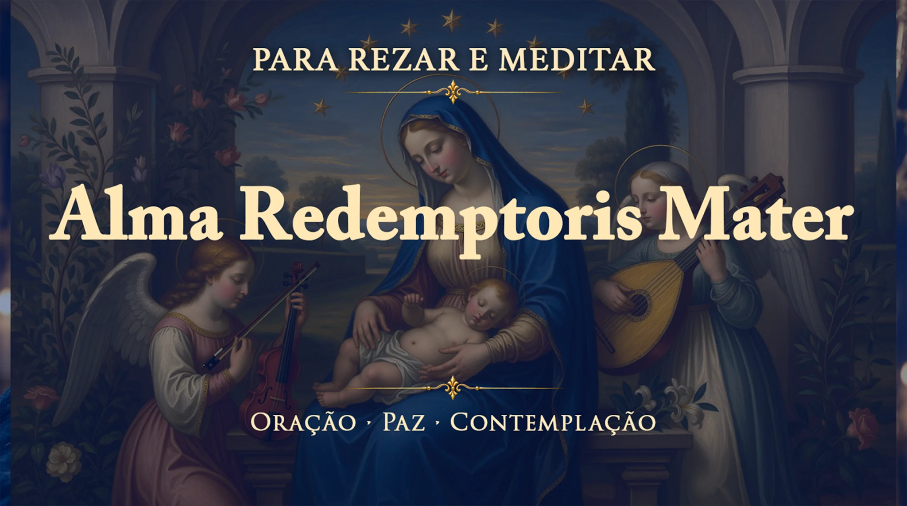

Advento · Antífona Mariana
Alma Redemptoris Mater
Mãe do Redentor · Canto gregoriano em Tom Simples · Oração e contemplação


Antífona mariana · Advento
Ouvir e contemplarAlma Redemptoris Mater — vídeo de oração e contemplação
Um momento de recolhimento e oração com a antífona Alma Redemptoris Mater.

Partitura para estudo e oração
Baixe a partitura
Partitura gratuita para canto, estudo e oração.
Abrir PDF em nova aba- Antífona
- Alma Redemptoris Mater · Advento
- Fonte musical
- Antiphonale Monasticum
- Arranjo da partitura
- Douglas Assumpção
- Texto
- Latim eclesiástico
Partitura completa
Alma Redemptoris Mater
Amplie ou imprima pelos controles do PDF. No celular, você também pode abrir em outra aba.
Alma Redemptoris Mater dirige-se à Virgem Maria como Mãe do Redentor, Porta do Céu e Estrela do Mar. No Advento, esta oração nos conduz à contemplação do mistério de Deus que quis entrar em nossa história e nascer de Maria.
Ler a meditação sobre a antífonaPara rezar e meditar · Tempo do Advento
Alma Redemptoris Mater: Maria, Mãe do Redentor
Uma oração antiga, cheia de esperança, que acompanha a Igreja na espera pelo Salvador.
Uma antífona mariana de esperança
Na tradição da Igreja, Alma Redemptoris Mater é uma das antífonas marianas entoadas no encerramento do Ofício das Completas. Sua presença no Advento e no tempo do Natal recorda que o mistério da Encarnação não pode ser separado do humilde sim de Maria.
Ao chamar a Virgem de Porta do Céu, a oração contempla o Salvador que veio ao mundo por meio dela. Ao invocá-la como Estrela do Mar, exprime a confiança daqueles que procuram orientação e esperança nas travessias da vida.
A natureza se maravilha
A expressão natura mirante — com a própria natureza maravilhada — convida-nos a contemplar o insondável mistério da Encarnação: o Criador assume a condição de criatura, sem deixar de ser Deus. Maria gera aquele que é o seu próprio Criador e Redentor.
Durante o Advento, essa verdade nos chama ao silêncio, à gratidão e à vigilância. Preparar o coração para o Natal significa também aprender a reconhecer a presença do Senhor nas realidades simples e humildes.
Oração em latim
Alma Redemptoris Mater,
quae pervia caeli porta manes,
et stella maris,
succurre cadenti,
surgere qui curat, populo:
Tu quae genuisti,
natura mirante,
tuum sanctum Genitorem,
Virgo prius ac posterius,
Gabrielis ab ore,
sumens illud Ave,
peccatorum miserere.
Para a contemplação
Que esta antífona nos ajude a fazer silêncio interior, a confiar nossas necessidades à intercessão da Santíssima Virgem Maria e a acolher com renovada fé o seu Filho, Jesus Cristo, nosso Redentor.
Para estudar a pronúncia e aprender a cantar, visite também a aula de Alma Redemptoris Mater no YouTube.